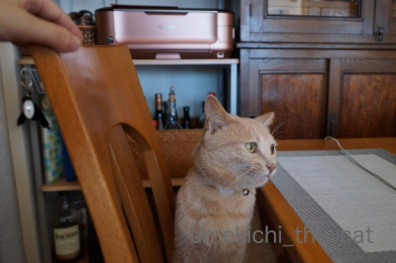
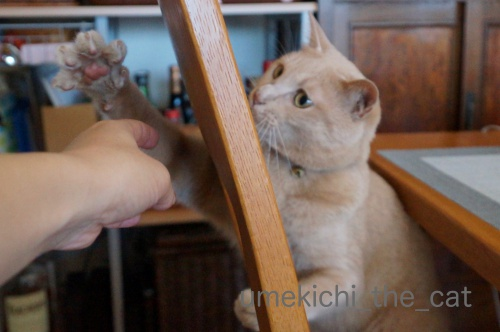
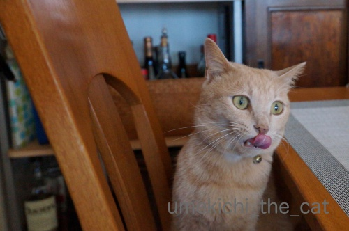
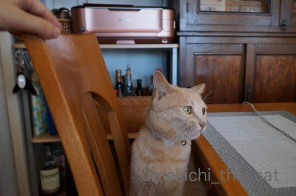
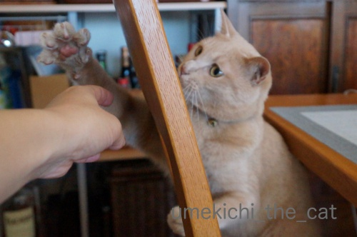
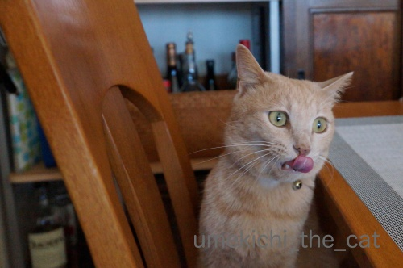

やっぱり猫様の気持ちはわからない・・・ [梅吉]
･゜ﾟ･*:.｡..｡.:*･゜ﾟ･*:.｡. .｡.:*･゜ﾟ･*･゜ﾟ･*:.｡..｡.:*･゜ﾟ･*:.｡..｡.:*･゜ﾟ･*

兄弟猫が千葉県柏市 沼南近隣センター付近で置き去りにされました。
昨年12月ごろと見られています。
情報がありましたらコメント欄で結構です。
お知らせくださいませm(_ _)m
･゜ﾟ･*:.｡..｡.:*･゜ﾟ･*:.｡. .｡.:*･゜ﾟ･*･゜ﾟ･*:.｡..｡.:*･゜ﾟ･*:.｡..｡.:*･゜ﾟ･*
普段パソコンは４人掛けの食卓テーブルに置いて使っています。

手も下げっぱなしだと疲れてくるので
となりの空いている椅子の背もたれに乗せたりするのですが
（車の運転している人がよくやってますよね）

なぜかそれが大好物な猫様(⌒_⌒;

お手手がぱぁぁぁぁー

特に背もたれ越しの手に大喜びw

もちろんガブガブ付きですw

うっかり置いた手に飛びつかれてびっくりする時もあります。
何が面白いんだろう・・・
夏限定で使っていたサークルあまりにもジャマで片付けました。
トンネルが夏休みから戻ってきましたよー。

この組み合わせは大喜びに違いない！とトンネルとキャリーを合体。
さぁ！いっぱい遊ぼうよー、と思ったのに・・・

出ました、コレジャナイ顔( ；∀；)
好きなもの同士の組み合わせなのにどうしてなんでしょ。
やっぱり猫様の気持ちは掴みきれません・・・
 ↑ガブッと一押し↑
↑ガブッと一押し↑
先日話題にしたインドジン・ウソツカナイ。
種を扱っている会社（興味のある方は電子カタログを見てね）
他にも面白いネーミングの商品が沢山ありました。
ちょっと抜粋。
春のセンバツ
夏の甲子園
秋冬のエース
（以上小松菜）
美味タス
（レタス）
感激アミーゴ
魔女の杖
インドジン・ウソツカナイ
（以上唐辛子）
スジナイン：スジ取りしなくて良いみたい。小林製薬みたいなネーミングですよねw
(さやいんげん）
揚げてトルコ
カレーなインド
炒めて台湾
（以上ナスビ）
ですってーＯ(≧▽≦)Ｏ
兄弟猫が千葉県柏市 沼南近隣センター付近で置き去りにされました。
昨年12月ごろと見られています。
情報がありましたらコメント欄で結構です。
お知らせくださいませm(_ _)m
･゜ﾟ･*:.｡..｡.:*･゜ﾟ･*:.｡. .｡.:*･゜ﾟ･*･゜ﾟ･*:.｡..｡.:*･゜ﾟ･*:.｡..｡.:*･゜ﾟ･*
普段パソコンは４人掛けの食卓テーブルに置いて使っています。

手も下げっぱなしだと疲れてくるので
となりの空いている椅子の背もたれに乗せたりするのですが
（車の運転している人がよくやってますよね）
なぜかそれが大好物な猫様(⌒_⌒;
お手手がぱぁぁぁぁー

特に背もたれ越しの手に大喜びw
もちろんガブガブ付きですw

うっかり置いた手に飛びつかれてびっくりする時もあります。
何が面白いんだろう・・・
夏限定で使っていたサークルあまりにもジャマで片付けました。
トンネルが夏休みから戻ってきましたよー。
この組み合わせは大喜びに違いない！とトンネルとキャリーを合体。
さぁ！いっぱい遊ぼうよー、と思ったのに・・・
出ました、コレジャナイ顔( ；∀；)
好きなもの同士の組み合わせなのにどうしてなんでしょ。
やっぱり猫様の気持ちは掴みきれません・・・
先日話題にしたインドジン・ウソツカナイ。
種を扱っている会社（興味のある方は電子カタログを見てね）
他にも面白いネーミングの商品が沢山ありました。
ちょっと抜粋。
春のセンバツ
夏の甲子園
秋冬のエース
（以上小松菜）
美味タス
（レタス）
感激アミーゴ
魔女の杖
インドジン・ウソツカナイ
（以上唐辛子）
スジナイン：スジ取りしなくて良いみたい。小林製薬みたいなネーミングですよねw
(さやいんげん）
揚げてトルコ
カレーなインド
炒めて台湾
（以上ナスビ）
ですってーＯ(≧▽≦)Ｏ

カフェオレ色の梅吉

梅吉 2023年8月10日 永眠


梅吉と出会った譲渡会

犬猫の理由なき殺処分ゼロ
妄想広告
UMEKICHI 光

爆発的に早い！
時々攻撃的！
Thanks to Mr.Boss365
爆発的に早い！
時々攻撃的！
Thanks to Mr.Boss365

がぷ♪がやはり一番かわいいです♪
愛情表現たっぷりですなぁ＾＾痛そうだけどｗ
揚げてトルコが食べたいです♪
by 猫毬 (2018-08-30 02:03)
好き+好き＝嫌い
という公式が猫界にはあるんですね＾＾；
by ぽちの輔 (2018-08-30 06:38)
手が来たぁ～と待ち構えているのですね♪
好きなもの同士の組み合わせ！
これじゃない（笑
何してくれてるねんって感じでしょうか(#^.^#)
by きぃ (2018-08-30 07:31)
椅子の背もたれ越しのチョイチョイからのガブガブ♪( ´▽｀)
梅吉さん、とっても楽しそうな顔してますねぇ=(^.^)=
それにひきかえ、キャリーとトンネルを引っ付けた
梅吉さんが気に入りそうなアスレチックを見ての醒めた表情(⌒-⌒; )
本当にお猫様の好みって難しいです(*_*)
が、ツボにハマってお猫様が喜んでくれると
これほど嬉しいこともないんですけどねぇ( ^ω^ )
by ニッキー (2018-08-30 07:34)
コレジャナイ顔、メチャ可愛いです(〃'∇'〃)
でも、別の日には大喜びしたり、更には同じ
日でも別の時間になると大喜びしそう(^_^;)
by middrinn (2018-08-30 09:03)
両手でガシッと捕まえた時の開いたおててが可愛いなぁ。ちょいちょいのばぁぁ具合なんかこれ以上開かないくらい開いてる。この瞬間はなかなか撮れませんよ。梅吉さんは綺麗な肉球コンテスト(あるのかな)でも優勝できそうです。
by zombiekong (2018-08-30 09:35)
おはようございます。
パンチ時のチラっと見える肉球が可愛いですね！！
両手抱えのガブガブは、至福の行為ですね！？多分？
ニャンズは自由人なので、人間の思いどうりにはならない！！（￣ ￣！！）
同居して実感しました。コレジャナイ顔！！訴えてますね！？(=^･ｪ･^=)
早急に改善を！！
by Boss365 (2018-08-30 10:02)
わかるわかる(笑)
「これじゃない」顔ｗｗ
うみがこの顔しますよー(笑)
遊んであげようとしても「これじゃない」ってやる！
カリカリを出しても「これじゃない」(笑)
梅吉君のおてて、ぱあああって開いてるの
めちゃめちゃ可愛いな^m^
by リュカ (2018-08-30 10:09)
ガブガブの後の、ぺろり♡ 美味しかったのかな～。
（〃д〃）きゃ～♪
by Ginger (2018-08-30 12:45)
コレジャナイのお顔。なんなんだろう。
めちゃくちゃ伝わってくるのよね。
わが家のコレジャナイチャンピオンはひなちゃんです。
おやつのグレードアップを要求します。カリカリにはトッピングです。
梅吉くんは一人っ子だからいいけど、ダブル、トリプルでコレジャナイされると
複雑な気持ちになりますｗ
野菜のネーミング、面白い！！
売り場の札にこんなの見つけたら「ん？ん？」って二度見しちゃう(*^-^*)
by emi (2018-08-30 13:40)
猫毬さん＞
本にゃんは甘噛みのつもりなんですよー。
確かに痛いけどw
ナス、全部食べてみたいです！
出来た状態で売ってないかしら・・・
ぽちの輔さん＞
大変不思議な公式ですが
猫様なら！と妙に説得力があります(*>艸<)
きぃさん＞
何気ない手、というのがポイントなのかも！
「ゆだんしてるで、よっしゃー！」みたいなw
トンネルとキャリーは分離したら
それぞれで楽しそうに遊んでました(⌒_⌒;
ニッキーさん＞
マズルぷっくりしてますよね＾＾
お聞かせ出来なくて残念ですが興奮して
ふんがふんがと鼻を鳴らしてもいるんですよw
ほら！面白いでしょ！！と
飼い主が狙いすぎるとダメなんでしょうか。
でも喜ぶ姿がみたくてついつい頑張っちゃいます！
middrinnさん＞
コレジャナイ顔、
いつもご贔屓いただいてありがとうございます＾＾
お、よくご存知ですね！！
夜テンション高い時にするとなんでも大喜びなんですよ。
でも眠くて付き合いきれませんwww
zombiekongさん＞
ぱぁぁぁぁはホント、MAXって感じですよね！
これでパンチされると（梅吉は遊ぶときは爪出さないから）
気持ちよくてクセになります(〃▽〃)
肉球、あんまり綺麗な色じゃないんですがイケるかな？
どちらかというと使い込んだ赤銅色・・・
日々走り回っているからでしょうかwww
Boss365さん＞
さすが、にゃんこマニアの方々はチラ見えしている肉球に
注目されるのですねー＾＾
がぶがぶは一応甘噛みのつもりのようですが
この痛みは猫変態にはたまりません！事後の赤い線は勲章だしw
キャリーとトンネルはすぐに分離しましたよ。
途端に楽しそうに遊び出す梅吉でした(^_^;)
リュカさん＞
文句がある顔とまた違ってコレジャナイ顔って
すごいプレッシャーを感じますよね＾＾
この顔一つで意思を伝えてくるんだから
猫様ってすごいよね！
私も見習わなくっちゃ！？( ´艸｀)
このぱぁぁぁぁの手でパンチされると肉球感がすごくって
（梅吉は爪出さないのよ）気持ちいいのよぉ〜。
GIngerさん＞
おかーさん、味見されちゃいましたＯ(≧▽≦)Ｏ
emiさん＞
ひなちゃんのコレジャナイ顔！
お望みのことはなんでもしてあげたくなりそうだけど
グレードアップを要求！？
より美味しいものをemiさんが教えちゃったのねー ( ´艸｀)
どうぞ身体に触らない程度に甘やかしちゃってください(^_－)☆
野菜、店頭で出来たのも売って欲しいなって思いました。
どれも食べて見たいでーす。
by ちぃ (2018-08-30 18:53)
梅吉さんガブガブ攻撃ですね！
その後に何もしてないよって感じで舌をペロですね(^^)
by ma2ma2 (2018-08-30 19:25)
好き嫌いがハッキリしている梅吉さんって素敵です。
ガブガブ攻撃の後のペロンはヤッターって感じなんでしょうね(^^)
by kou (2018-08-30 19:42)
チラッと動くのが梅吉さんの好物？（笑）
ぱあぁっとお手手を開いた時の、ピンクの肉球。
プニュプニュなのかしら。
ガブガブの後のペロリン、ちぃさんのお手手は美味しかったのね〜
種屋さんのホームページ、先日のブログの時見て大笑いでした。
コレジャナイカオ、あ〜あぁ〜とガッカリしているのですね（笑）
by kiki (2018-08-30 20:18)
コレかな～？YES！ コレじゃな～い？YES！♪
毎日歌いながらオモチャ選んでますが、ホントにがっかりした顔をされると、ものすごく焦ってヘコみます^^;
※歌が古すぎてわからなかったらごめんなさい<(_ _)>
梅吉さんのお手手、すか～っときれいに開きますね！
ウチのも背もたれの隙間は大好き。
椅子にすわって何気なく背中をポリポリ掻くと、背もたれごと猫パンチされてびっくりすること多々ありです(^▽^;)
by ゆきち (2018-08-30 20:48)
お手手チョイチョイが可愛いですね！^^)
コレジャナイ、猫の面白がるツボって本当に分からないですよね。
種の名前、もうお野菜の名前じゃ無くなってますね。^^;
by yes_hama (2018-08-30 22:14)
私は好きです、コレジャナイ顔(^^)
アンタダレ顔をよくされます(^^;
by riverwalk (2018-08-30 22:26)
梅吉さん、「これは違うにゃあ~」て表情していますね。
by ニコニコファイト (2018-08-31 06:27)
こ、コレジャナイ、と言われてもー(^_^;)
野菜の名前、ほんまに好き放題やってますなー(≧∀≦)
by よーちゃん (2018-08-31 07:29)
コレジャナイ顔最高です!!
by palpal (2018-08-31 15:20)
ma2ma2さん＞
あ、私はやったでーのペロかと思ってました( ´艸｀)
てへぺろ！？
kouさん＞
嫌いなものは見ようともしない時があるので笑えますw
ペロン、満足げですよね(≧▽≦)
kikiさん＞
肉球は「ミシッ」としまった感じです。
弾力満点で若いって良いわねーと思ってしまいます( ´艸｀)
種屋さんのHPはkikiさんのコメントを見て見直しました。
ミケランジェロとかラファエロのタネは店頭でも見ましたよー。
コレジャナイ顔はがっかりというより
「おかーさんはつまらんひとや」と言われているようで
ちょっと凹みますwww
ゆきちさん＞
優ちゃんの歌、
歌詞はうろ覚えですがフルコーラス歌えますよ (๑•̀ㅂ•́)و✧
恋コロン、髪にもコロン、ヘアコロンシャンプーも使ってました(〃▽〃)
梅吉はコレジャナイ顔の後、足早に別室へ立ち去る・・・
という下僕の頑張りに追い打ちをかける仕打ちもしてくれますw
そんなことされると下僕はますます燃えちゃうんですけどね(^_－)☆
背もたれごと猫ぱんちとは、さすがこてつ先輩はやりますね！！
yes_hamaさん＞
面白がるツボ、日や時間帯によっても変わりますよね！
もう毎日翻弄されっぱなしですw
タネの名前付け、社内で公募でもしたのでしょうか(*>艸<)
riverwalkさん＞
やられるとちょっと凹みますが私もコレジャナイ顔大好きです！
アンタダレ顔はされたことありませんが
外出から帰ってきても「ガン無視」の事はよくあります。
これもアンタダレの一種でしょうか・・・
ニコニコファイトさん＞
ね？はっきり意志が伝わってきますよね。
ちゃんとコミュニケーション取れてるな！って嬉しくもあります。
（ちょっと凹むけどw）
よーちゃん＞
コレジャナイ顔、されるとちょっと凹みますけど
「ああ、ごめんねー、おかーさんが間違ってたねー！！」と
媚びへつらうのも下僕としてはなかなか楽しいのですよ(*>艸<)
野菜の名前、社内で「一番面白いのに報奨金！」とかあったのでしょうかwww
palpalさん＞
ナノくんときなこちゃんはどんな顔するんだろう！
ひょっとしてナノくんはやっぱり平常心！？
by ちぃ (2018-08-31 15:49)
かわい~♪
かしっと手を添えてのガブ。
by ふにゃいの (2018-09-01 15:24)
ていっ！真剣な表情がたまりませんね。
「コレジャナイ」顔、結構好きです（笑）
今後も見られることを期待。（飼い主さん的には切ないですね^^）
以前、我が家には「ナンジャーコレ」がありました。
小松菜はなぜ野球ネタなんでしょうかね^^;
by Ja-Kou66 (2018-09-01 16:49)
ふにゃいのさん＞
かしっと添えられたお手手は
爪が出てないので感触最高なんですよー＾＾
ガブも慣れると痛くありません（←ホントか！）
Ja-Kou66さん＞
切なさは一瞬で「コレジャナイ顔いただきましたー！」って
気分になります＾＾
もっと頑張らなくっちゃ♪みたいなw
アルブカスピラリスフリズルシズル調べてみました。
花屋さんがつけたなんちゃって名かと思ったら
正式な和名なんですね！
この種屋さんが絡んでないかしら・・・
by ちぃ (2018-09-02 20:52)